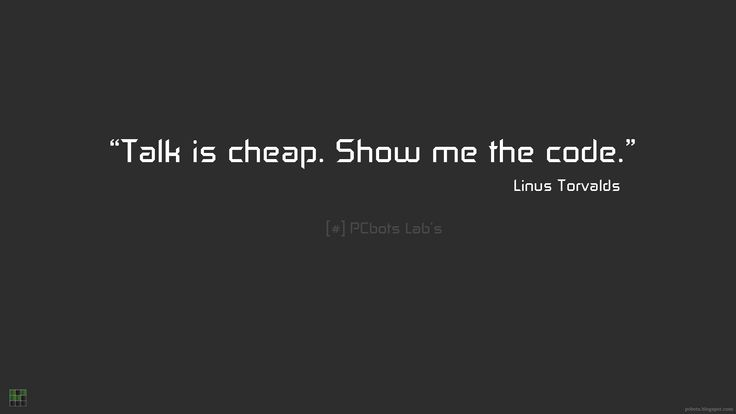

Employee Details
| Name |
Education |
Country |
| Harsh D |
MCA |
Mumbai |
| Yash D |
BAF |
Mumbai |
All Might |
Masters |
Japan |
Lists And Its Types
Unordered List
- Harsh
- Yash
- Tejaswini
- HTML (HyperText Markup Language)
- HTML is the standard markup language used to create and design documents on the World Wide Web. It defines the structure and layout of a web page by using a system of tags and attributes to describe the content. HTML elements consist of tags enclosed in angle brackets, which are used to mark up the beginning and end of elements within the document. HTML provides a framework for organizing text, images, multimedia, and other resources into a cohesive web page that can be displayed and interpreted by web browsers.
- CSS (Cascading Style Sheets)
- CSS is a style sheet language used to describe the presentation and formatting of HTML documents. It allows web designers and developers to control the appearance of web pages by specifying the visual aspects such as layout, colors, fonts, and spacing. CSS works by applying style rules to HTML elements, defining how they should be displayed in the browser. By separating content from presentation, CSS enables greater flexibility and consistency in the design of web pages, making it easier to maintain and update the visual aspects of a website across multiple pages
- JavaScript
- JavaScript is a high-level, interpreted programming language that enables interactive and dynamic behavior on web pages. Originally developed for use in web browsers, JavaScript is now supported by all major web browsers and can be used to create a wide range of interactive features and applications, including animations, user interfaces, form validation, and dynamic content updates. JavaScript code is typically embedded directly into HTML documents or included as external script files, allowing developers to add functionality to web pages and enhance the user experience. JavaScript is known for its versatility and is widely used in both client-side and server-side development, making it one of the most popular programming languages for web development.